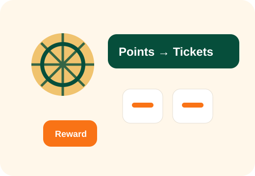
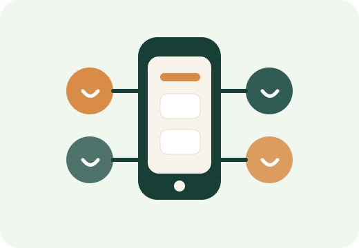
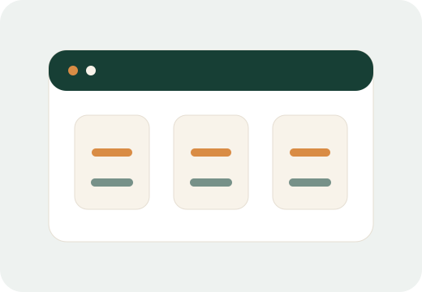
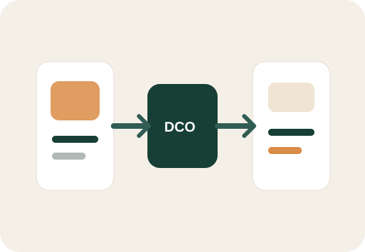

0→1 / Gamification
OPEN! 遊樂園
以點數兌換遊樂券為核心的會員遊戲化平台，三個月完成 0→1 上線。
- 每月 50 萬+ 訪客
- 81% 互動率
- 逾百萬點數回收
這些專案不是單純的功能展示，而是我如何定義問題、設計機制、推動協作，並讓產品產生影響的過程。
| 專案 | 產品類型 | 核心能力 |
|---|---|---|
| OPEN! 遊樂園 | 會員互動平台 | 0→1、遊戲化、點數機制 |
| 健康新事業 Web MVP | 新事業 MVP | 家庭情境、MVP、健康促進邊界 |
| Cr.ED SaaS 平台 | B2B SaaS | 模組化、Roadmap、需求取捨 |
| RMN 零售媒體聯播網 | 平台型產品 | Product Feed、DCO、跨系統整合 |
每個案例都呈現 Context、Problem、My Role、Key Product Decision、Solution、Result 與 Reflection。

以點數兌換遊樂券為核心的會員遊戲化平台，三個月完成 0→1 上線。


從內部工具到 Rich Media B2B 平台，將高頻需求模組化。

將 Product Feed、DCO 與商品素材整合成零售媒體平台能力。
從 0 到 1 推動產品上線、設計能帶動使用者參與的機制、將商業目標轉化為產品流程，並把高頻需求轉化為平台能力。